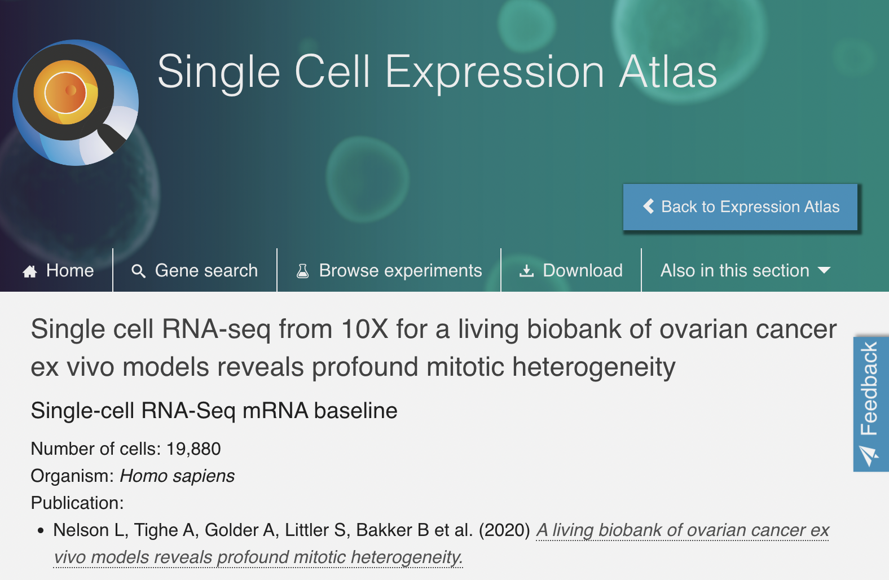
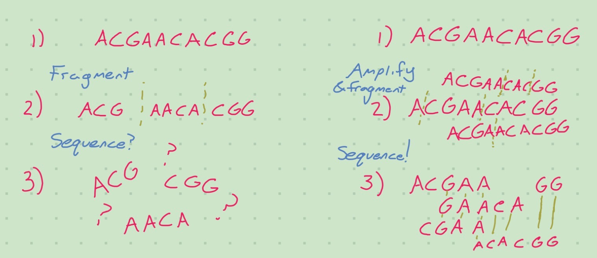
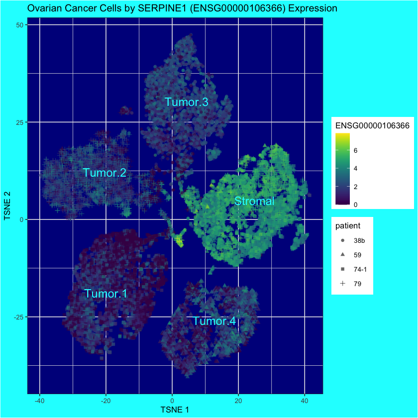
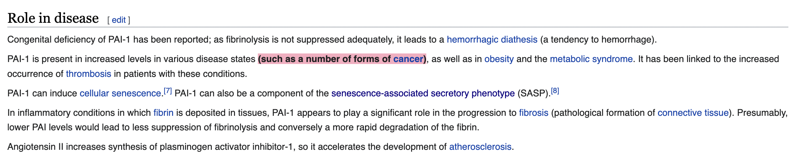

- 23284
- 19880
Journal Club
Omics Data is the Future of Medicine
Bailey Andrew
Feb 1, 2023
Cancer, from an omics perspective
Many ‘omics’: genomics, transcriptomics, proteomics, etc…
Cells divide and accrue mutations
Things can go wrong at the omics level
Why should you care?
- Many diseases are caused by an omics issue
- When so, other data is a proxy1
- heterogenous tumors?: single-cell omics
- Symptoms may be caused by omics issues
- Proteomics enables better design of treatments?
1) Well, environmental factors can be a cause, but limited ability to affect them
Now that you care…
Hands-on Learning Experience™
Dataset Details - Where?
To build a living biobank, we established a biopsy pipeline, collecting samples from patients diagnosed with epithelial ovarian cancer treated at the Christie Hospital.
– Nelson et al. (2020)
(Christie Hospital is in Manchester)
Dataset Details - Who?
Between May 2016 and June 2019, we collected 312 samples from patients with chemo-naïve and relapsed disease, either as solid biopsies or as ascites (Fig. 1a)
Ten patients had HGSOC while two had mucinous ovarian carcinoma. Longitudinal biopsies were collected from three patients.
– Nelson et al. (2020)
Dataset Details - How?
The primer contains:
an Illumina TruSeq Read 1 (read 1 sequencing primer)
16 nt 10x Barcode
12 nt unique molecular identifier (UMI)
30 nt poly(dT) sequence
Barcoded, full-length cDNA is amplified via PCR to generate sufficient mass for library construction.
– Nelson et al. (2020)
Load the Data
Load the Data
Ensembl.ID
1 ENSG00000000003
2 ENSG00000000419
3 ENSG00000000457
4 ENSG00000000460
5 ENSG00000000938
6 ENSG00000000971Load the Data
Cell.ID
1 SAMEA6492740-AAACCCACAGTTAGGG
2 SAMEA6492740-AAACCCACATGTGTCA
3 SAMEA6492740-AAACCCAGTCGCATGC
4 SAMEA6492740-AAACCCAGTCTTTCAT
5 SAMEA6492740-AAACCCATCCGTGTCT
6 SAMEA6492740-AAACCCATCCTCTCTTLoad the Metadata
class: SingleCellExperiment
dim: 23284 19880
metadata(0):
assays(1): counts
rownames(23284): ENSG00000000003 ENSG00000000419 ... ENSG00000289701
ENSG00000289716
rowData names(0):
colnames(19880): SAMEA6492740-AAACCCACAGTTAGGG
SAMEA6492740-AAACCCACATGTGTCA ... SAMEA6492743-TTTGTTGGTCCTGGTG
SAMEA6492743-TTTGTTGTCAGATTGC
colData names(1): patient
reducedDimNames(0):
mainExpName: NULL
altExpNames(0):Why So Much Preprocessing?
ELI5: Wet-lab work is hard
class: SingleCellExperiment
dim: 23284 19880
metadata(0):
assays(2): counts logcounts
rownames(23284): ENSG00000000003 ENSG00000000419 ... ENSG00000289701
ENSG00000289716
rowData names(0):
colnames(19880): SAMEA6492740-AAACCCACAGTTAGGG
SAMEA6492740-AAACCCACATGTGTCA ... SAMEA6492743-TTTGTTGGTCCTGGTG
SAMEA6492743-TTTGTTGTCAGATTGC
colData names(2): patient sizeFactor
reducedDimNames(0):
mainExpName: NULL
altExpNames(0):Identifying stromals
# We'll assign clusters by eye since it's obvious
ovarian.sce$tumor.or.stromal <- "Stromal"
ovarian.sce$tumor.or.stromal[ovarian.sce$tumor.stromal.clusters==1] <- "Tumor.1"
ovarian.sce$tumor.or.stromal[ovarian.sce$tumor.stromal.clusters==2] <- "Tumor.2"
ovarian.sce$tumor.or.stromal[ovarian.sce$tumor.stromal.clusters==4] <- "Tumor.3"
ovarian.sce$tumor.or.stromal[ovarian.sce$tumor.stromal.clusters==5] <- "Tumor.4"[1] "ENSG00000106366"plotReducedDim(
ovarian.sce,
"TSNE",
colour_by=diff.exp.gene,
shape_by="patient",
text_by="tumor.or.stromal",
text_colour="cyan"
) +
ggtitle("Ovarian Cancer Cells by SERPINE1 (ENSG00000106366) Expression") +
theme(
panel.background = element_rect(fill = "darkblue"),
plot.background = element_rect(fill = "cyan")
)
SERPINE1
PAI-1, the protein encoded by SERPINE1, is related to cancer!
- Form hypotheses to guide future experiments:
- Can SERPINE1 be a diagnostic factor?
- Is it a cause or symptom of cancer?
- Is it important for tumor health?
- Does it affect patient wellbeing or outcomes?
- Can drugs be designed to target it?
Try It Yourself!
- Go to the Single Cell Expression Atlas
- Pick an interesting dataset
- Download it
- Read the paper
- Read the Bioconductor scRNA ebooks!!!
- Perhaps the best educational resource I’ve used for anything
- Practical and conceptual
- Recreate their preprocessing steps
- Pick a figure in the paper and recreate it
- We recreated Figure 5a from Nelson et al. (2020).
The End
References
Nelson, Louisa, Anthony Tighe, Anya Golder, Samantha Littler, Bjorn Bakker, Daniela Moralli, Syed Murtuza Baker, et al. 2020. “A Living Biobank of Ovarian Cancer Ex Vivo Models Reveals Profound Mitotic Heterogeneity.” Nature Communications 11 (1): 822. https://doi.org/10.1038/s41467-020-14551-2.